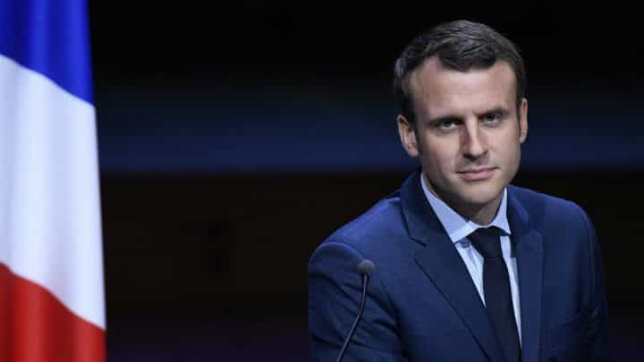
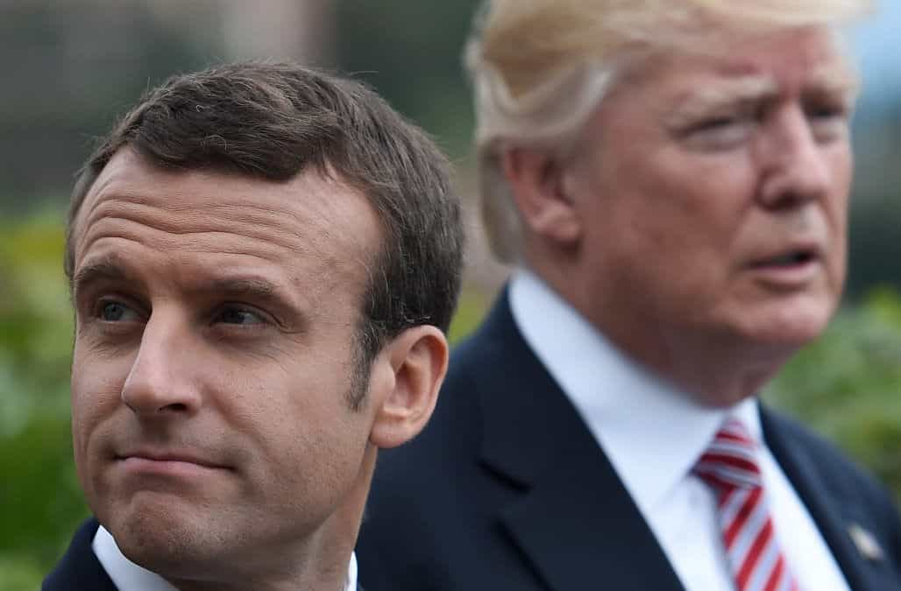

Quintus can be found at qcurtius.com. He is the author of the books On Duties, Thirty Seven, Sallust: The Conspiracy Of Catiline And The War Of Jugurtha, and other books. His work has been reviewed at Taki's Magazine. He can be followed on Twitter


The conventional “wisdom” about France’s new president Emmanuel Macron is that he is just another boring EU bureaucrat, notable only for the tabloid discussions surrounding his spouse. Some political observers have predicted that he will prove to be just another mediocrity in France’s postwar line of mediocre leaders. I argue that this judgment is premature, and that, far from being a passive observer to political events, Macron is showing signs of becoming a very assertive leader. He may very well surprise the world.
We should note first of all that Macron is the youngest president ever to hold the office. As a student of philosophy, he is a product of France’s most prestigious schools and institutions. Contacts in the financial world (one of whom I have spoken with personally) describe Macron as a very subtle thinker, a man who is being underestimated by nearly everyone.
Quietly and behind the scenes, he has been aggregating power in his own hands in a very methodical way. He has been helped along in this quest by two factors: the French people’s fear of terrorism, and public dissatisfaction with the weak leadership of his many predecessors.

Some French news periodicals have begun calling him “Jupiter,” as a humorous reference to his perceived drive to make himself the ultimate authority. As a student, he wrote his thesis on Machiavelli, and is known to be an admirer of Napoleon and De Gaulle. He has shown a willingness to act on his own and bypass parliament: he is undertaking a reform of France’s labor code by presidential decree, and is also significantly changing the terrorism laws in France to give law enforcement the tools it needs to combat the threat.
On Monday, July 3, he plans to address both houses of parliament in Versailles, something that would have been unthinkable under past presidents. Leftist parties have scorned the idea, calling it “pharaonic.” It is the kind of thing that De Gaulle or Louis Napoleon might have done, but has not been experimented with in the modern era. Perhaps that is precisely what the situation calls for.
But it is the right move. By addressing the entire parliament directly (925 members in total) he is sending a clear message that he is in charge and knows where he is taking the country. This is just the kind of thing a leader should do in a time of crisis. Displaying an awareness of the need for alliances, he has invited US president Trump to France for Bastille Day, at a time when Trump is widely reviled in Europe. In all of these moves, Macron seems to be practicing a fundamental principle of politics: taking the initiative allows you, the leader, to set the terms of the debate and shape the political landscape.
Macron’s new initiatives are enabling him to keep in check France’s powerful labor unions, and to set the agenda for domestic security policy. One of the big changes in the security arena is his change from allowing the judiciary branch to define the scope of searches and seizures, to allowing his own Interior Ministry (headed by the hard-liner Gerard Collomb) to perform this task.
The interior ministry will now be able to make arrests, shut down mosques that spew jihadist propaganda, and expedite the deportation process. While it remains to be seen whether any of these measures will make a difference in the security environment, what matters is that the president is concentrating power more and more in his own hands.

In the international relations field, Macron has shown a willingness to play both America and Russia against each other: he has courted them both but has been vague on providing concrete assurances about what he is willing to deliver. He has sacked four cabinet ministers—thus far—who have not performed to the level of his expectations. The word is going out, for those willing to listen, that a new reformer is in town who is willing to do what is needed to get the job done. He has been rather unapologetic–even arrogant–in putting the media firmly in its place.
Perhaps the country’s crisis mode has given a man like Macron the ability to try to undertake transformative change. People in France are frustrated by decades of stagnation, anemic leadership, and apparently endless terrorist attacks that politicians seem unable or unwilling to solve. Macron enjoys a decisive majority in parliament and intends to press that advantage; his campaign book was entitled “Revolution” and he clearly intends to make major changes. In a recent interview with Le Figaro, he claimed his election was “a beginning of a French renaissance and I hope a European one as well.”
Only time will tell whether Macron will be able to make good on his ambitions and projects. It is too early to tell whether his administration will be just another false start, and more empty rhetoric, for a nation and continent desperately in need of vigorous, aggressive leadership. But the initial signs are encouraging, and they are going largely unnoticed here in the United States.
We should keep a close eye on political developments in France: Macron has proven himself to be a canny political operator and has been dramatically underestimated. The ROK International Affairs Desk will be monitoring events in France closely for updates in the weeks and months ahead.
Read More: What The Victory Of Freemason Puppet Emmanuel Macron Means For Western Patriots